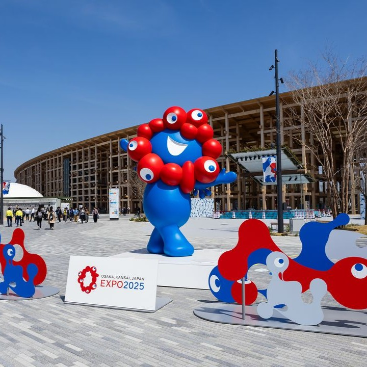
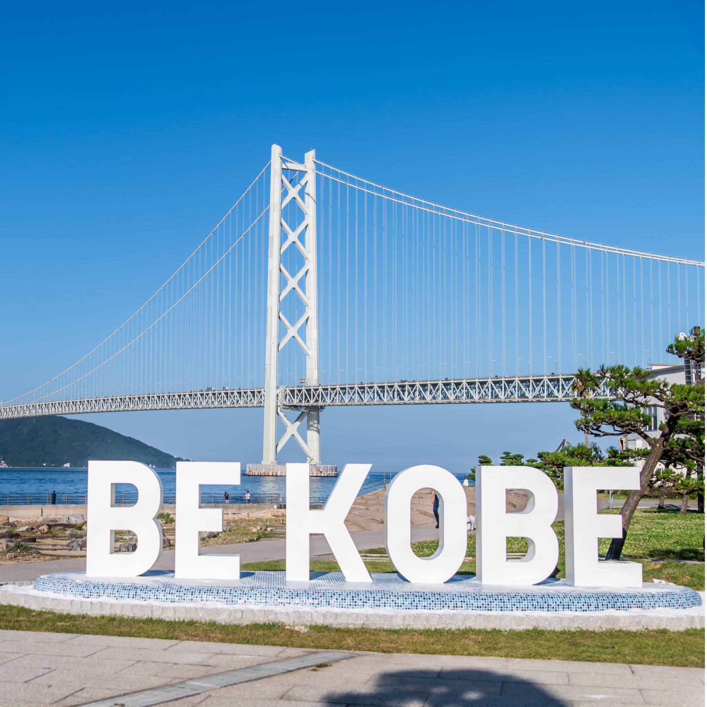

グランドリングを歩くし、いろいろな国の文化を見ました。ドローン＆プロジェクションマッピングショー、花火＆セレブレーション日没後には、ドローンアニメーションとプロジェクションマッピングが融合した演出が楽しめます。「One World, One Planet（ひとつの世界、ひとつの地球）」といったテーマの物語が視覚的に表現され、観客を魅了します。さらに、季節ごとの花火イベントが夜空を彩り、記憶に残るひとときを演出します。

林崎松江海岸（はやしざきまつえかいがん）：電車でアクセスできる静かなビーチで、遠浅の海、バーベキュー設備、シャワーなどが整っており、のんびりとした雰囲気が魅力です。家族連れや静かに過ごしたい日に最適です。